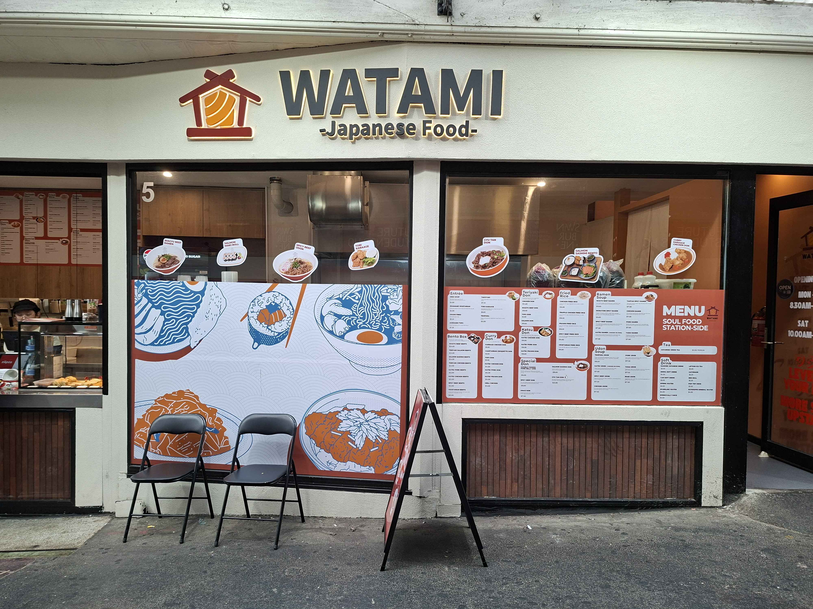
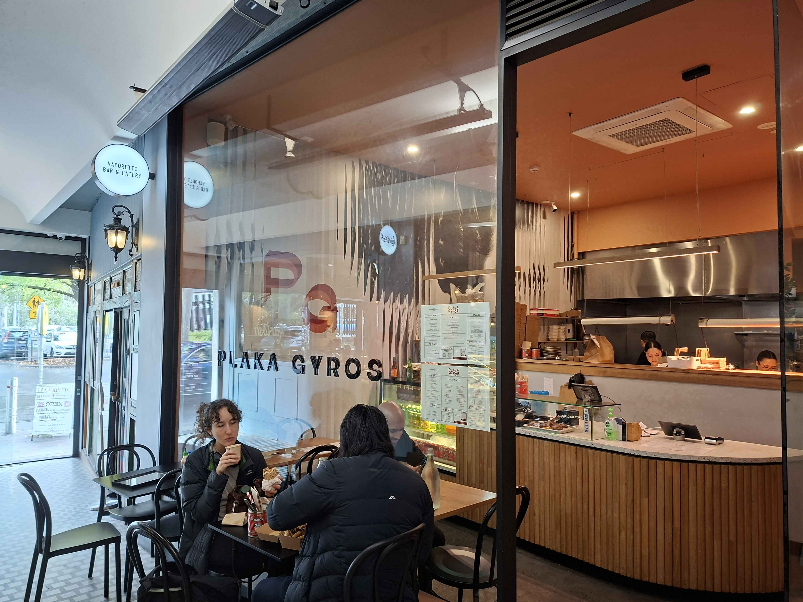
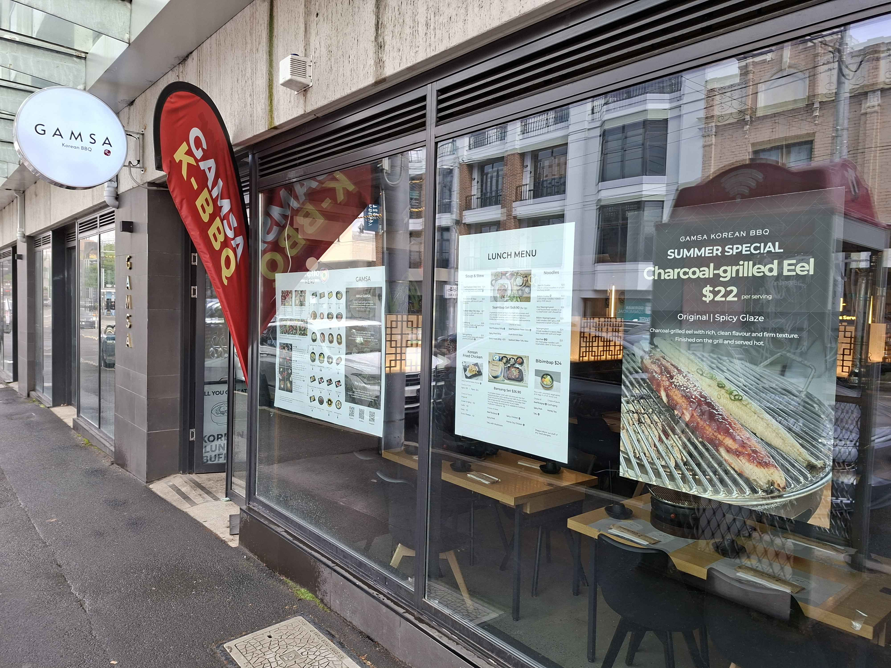
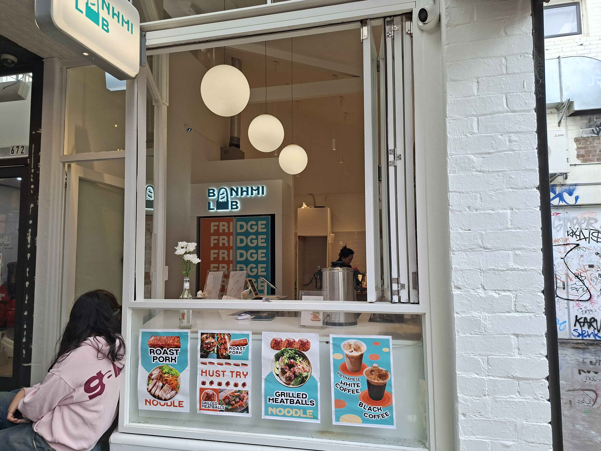
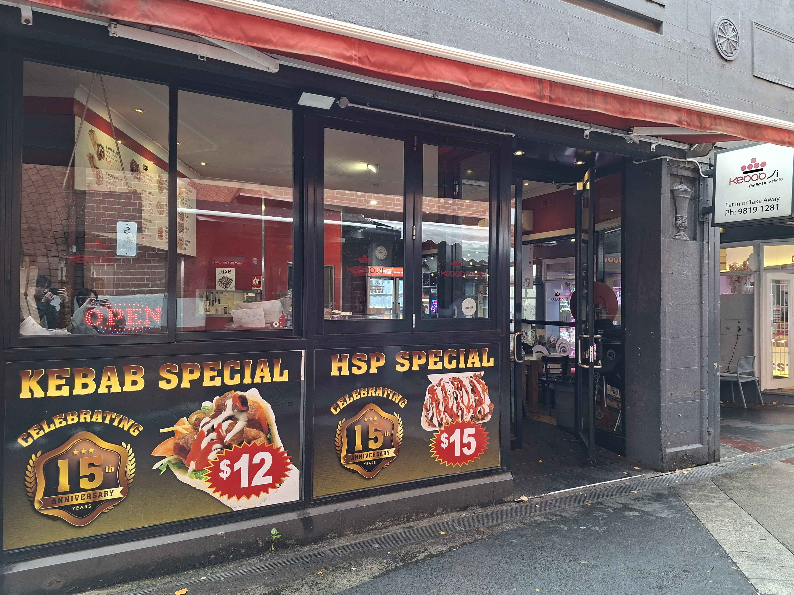
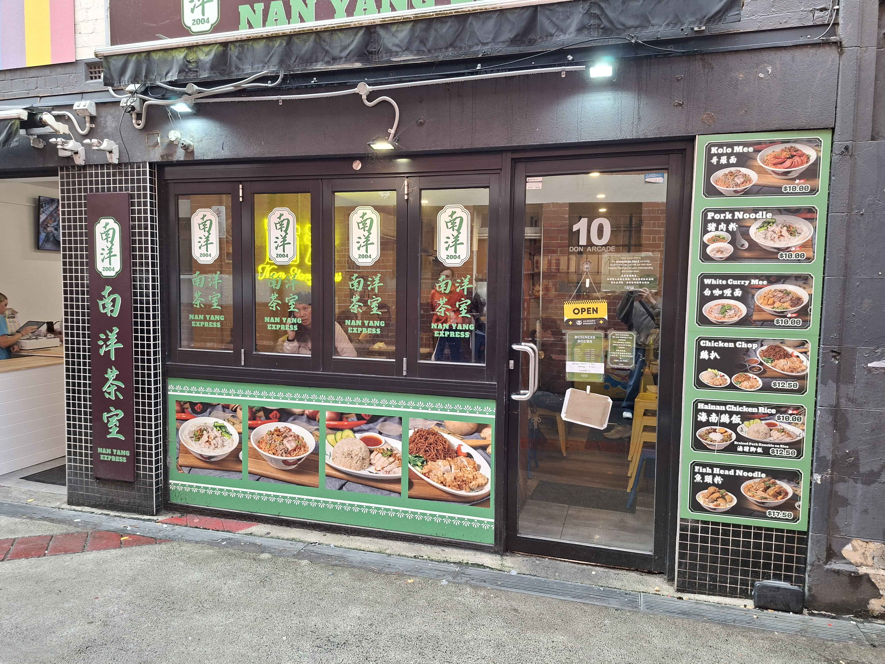

Restaurants Near Swinburne Hawthorn
Six handpicked restaurants along Glenferrie Road, Hawthorn.

Watami Japanese Food
Japanese — 672 Glenferrie Road, Hawthorn
Watami Japanese Food is a casual spot on Glenferrie Road that serves affordable Japanese meals. It is popular with students for quick lunches, especially after a web development class, with its tasty and simple dishes. The portions are decent for the price, making it a good option if you are craving that Japanese itch.
| Dish | Price |
|---|---|
| Chicken Katsu Curry Don | $18.30 |
| Double Cook Belly Don | $10.90 |
| Miso Soup | $4.80 |
Price range: $12–$20
Deposit: $0

Vaporetto Bar & Eatery
Italian — 681 Glenferrie Road, Hawthorn
Vaporetto Bar & Eatery is an Italian restaurant near the alley at Lido's Cinema that offers a more formal dining experience. It serves authentic pasta, slow-cooked dishes, and richer meals suited for dinners or special occasions. It is a good choice when you want something more high-end, although do be warned it may get a bit pricey.
| Dish | Price |
|---|---|
| Tortiglioni alla Vodka | $34 |
| Ravioli della Laguna | $38 |
| Ossobuco alla Veneziana | $44 |
Price range: $40–$120
Deposit: $0

Gamsa Korean BBQ
Korean — 625 Glenferrie Road, Hawthorn
Gamsa Korean BBQ is a Korean restaurant where you cook meat at your table. It is a group dining spot with a lively atmosphere, especially with friends or peers. The menu includes BBQ meats, rice dishes, and delicious sides, making it a great choice for dinner with friends.
| Dish | Price |
|---|---|
| Wagyu Sirloin | $54 |
| Angus Ribeye | $45 |
| Dolsot Bibimbap | $26 |
Price range: $40–$50
Deposit: $0

Banh Mi Lab
Vietnamese — Glenferrie Road, Hawthorn
Banh Mi Lab is a small Vietnamese takeaway shop that focuses on quick meals. It mainly sells banh mi rolls, noodles, and coffee. It is more of a grab-and-go place rather than a sit-down restaurant, which makes it popular with students during busy days. For the price and size, you really cannot complain.
| Dish | Price |
|---|---|
| Roast Pork Banh Mi | $12 |
| Meatball Vermicelli | $14.50 |
| Iced Vietnamese Coffee | $6.50 |
Price range: $10–$20
Deposit: $0

Kebabji
Middle Eastern — Glenferrie Road, Hawthorn
Kebabji is a casual Middle Eastern eatery known for meat-packed meals like kebabs, pizzas, and especially an HSP. The food is rich and filling with strong flavour and a decent portion size. It is great for when you want nothing but meat and crispy chips, making it popular for lunch and early evening dining.
| Dish | Price |
|---|---|
| Mixed HSP | $17.50 |
| Lamb Kebab | $13.50 |
| Meat Pizza | $8 |
Price range: $20–$50
Deposit: $0

Nan Yang Express Hawthorn
Malaysian — Glenferrie Road, Hawthorn
Nan Yang Express is a Malaysian restaurant that serves cheap and filling meals like noodles and rice dishes. It is split into two restaurants — one for smaller groups of one to three people, and the other for groups of four or more. It is a casual dining spot and, from personal experience, it is my go-to every week.
| Dish | Price |
|---|---|
| Kolo Mee | $10 |
| Claypot Noodles | $10 |
| Nasi Lemak | $7.60 |
Price range: $10–$20
Deposit: $0